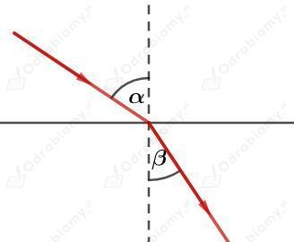
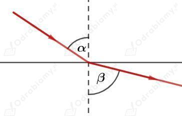
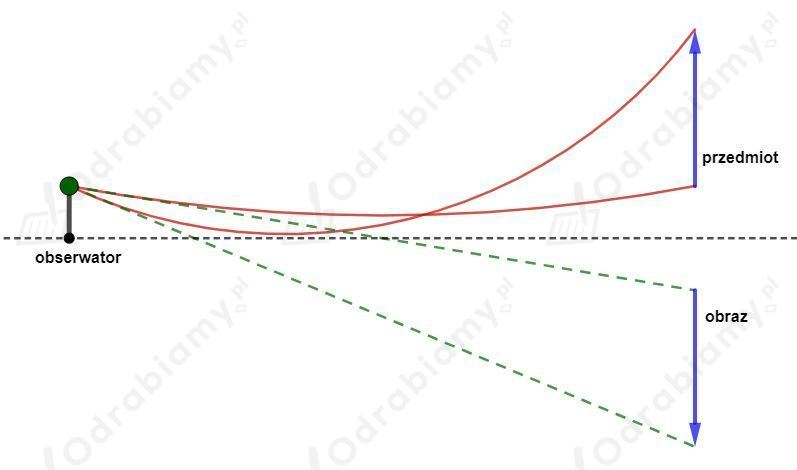
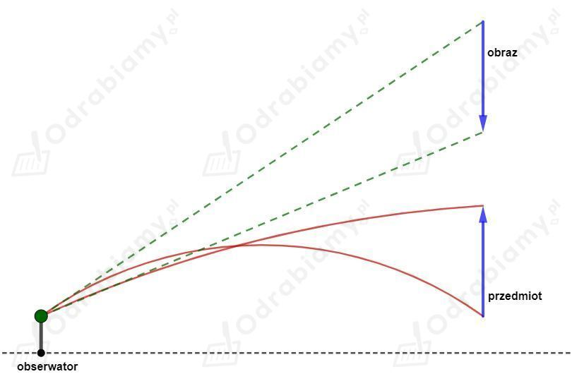

Na otwartym morzu fale poruszają się w kierunku zgodnym z kierunkiem wiatru. Jeśli taka fala zbliża się do linii brzegowej, to napotyka na swojej drodze podwyższenie dna morskiego. Przy odpowiednio płytkiej głębokości morza fale zaczynają znacząco spowalniać w wyniku tarcia mas wody o dno morza.
Fala zbliżająca się do linii brzegowej pod pewnym kątem jest wyhamowywana nierównomiernie - jej cześć, która pierwsza napotyka podwyższenie dna zaczyna szybciej spowalniać od pozostałej części fali bardziej oddalonej od linii brzegowej. W efekcie obserwujemy załamywanie się fali i biegnie ona prostopadle do brzegu.
Stosunek kąta padania do kąta załamania jest wyrażony za pomocą prawa Snelliusa:
Funkcja sinus jest funkcją rosnącą dla kątów od 0° do 90°.
Światło porusza się w powietrzu z większą prędkością niż w szkle.
Jeżeli kąt padania jest większy od kąta załamania to jest większy od i prędkość światła w pierwszym ośrodku jest większa od prędkości w drugim ośrodku.
Taka sytuacja ma miejsce na rysunku A.

Jeżeli światło porusza się szybciej w pierwszym ośrodku, to ośrodek ten musi być powietrzem. Zatem światło przechodzi z powietrza do szkła.
Jeżeli kąt padania jest mniejszy od kąta załamania to jest mniejszy od i prędkość światła w pierwszym ośrodku jest mniejsza od prędkości w drugim ośrodku.
Taka sytuacja ma miejsce na rysunku B.

Jeżeli światło porusza się szybciej w drugim ośrodku, to ośrodek ten musi być powietrzem. Zatem światło przechodzi ze szkła do powietrza.
Stosunek kąta padania do kąta załamania jest wyrażony za pomocą prawa Snelliusa:
Funkcja sinus jest funkcją rosnącą dla kątów od 0° do 90°.
a) światło przechodzi z wody do lodu
Prędkość światła w wodzie:
Prędkość światła w lodzie:
Zatem:
Kąt załamania jest większy od kąta padania .
b) światło przechodzi ze szkła do wody
Prędkość światła w szkle:
Prędkość światła w wodzie:
Zatem:
Kąt załamania jest większy od kąta padania .
c) światło przechodzi z lodu do szkła
Prędkość światła w lodzie:
Prędkość światła w szkle:
Zatem:
Kąt załamania jest mniejszy od kąta padania .
Stosunek kąta padania do kąta załamania jest wyrażony za pomocą prawa Snelliusa:
Funkcja sinus jest funkcją rosnącą dla kątów od 0° do 90°.
Fala dźwiękowa przechodzi z powietrza do wody.
Prędkość dźwięku w powietrzu:
Prędkość dźwięku w wodzie:
Zatem:
Dla dźwięku kąt załamania jest większy od kąta padania .
Światło przechodzi z powietrza do wody.
Prędkość światła w powietrzu:
Prędkość światła w wodzie:
Dla światła kąt załamania jest mniejszy od kąta padania .
Fatamorgana to inaczej miraż. Zjawisko to powstaje na skutek załamywania się promieni światła przechodzących przez granicę warstw powietrza o innej gęstości. Takie warstwy powietrza o różnej gęstości mogą powstawać na skutek dużego gradientu temperatury (różnice temperatury poszczególnych warstw powietrza) w powietrzu - np. na pustyniach. Jeżeli światło przebędzie dużą odległość, to odstępstwo od prostoliniowego biegu staje się na tyle znaczące, że obiekty będące daleko widzimy jako zniekształcone lub odwrócone.
Schemat powstawania mirażu dolnego:

Schemat powstawania mirażu górnego:

Na rysunkach zaznaczono:
Promienie czerwone - promienie światła zagięte w powietrzu i wpadającego do oczu obserwatora.
Promienie zielone - prostoliniowe promienie styczne do promieni czerwonych wpadających do oczu obserwatora. Na przedłużeniu tych promieni obserwator będzie widział pozorny obraz przedmiotu.
Źródła:
pl.wikipedia.org/wiki/Miraż
www.fuw.edu.pl/~mklis/publications/Delta/fatamorgana.pdf
Dzięki odpowiedniemu ustawieniu przeźroczystego naczynia względem kolorowego tła, odbite promienie światła od tła ulegną takiemu załamaniu, że kolory tła zostaną odwrócone.